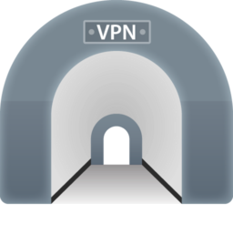

امـنـیـت رایـانـه
برای فعالان مدنی و روزنامهنگاران
{ OpenVPN }
ایرانسک
IranSecurity
IranSec
IranSec2
این محتوا با و تحت گواهی منتشر میشود (بیشتر بخوانید)
OpenVPN
راهنمای نصب و استفاده
شهریور ۱۳۹۸چند نکته
- OpenVPN نرمافزاری رایگان و متنباز است
- OpenVPN شبیه به برنامههای پراکسی نیست و نیاز به فایل تنظیمات دارد که باید از ارائهدهندهی آن این فایل را بگیرید. پس پیش از ادامه نیاز دارید که فایل تنظیمات و شناسه/رمز خود را داشته باشید.
- برنامه را تنها از تارنمای آن دریافت کنید. در جدول زیر شکلک برنامه و پیوند دریافت آن برای هر سیستم عاملی گذاشته شده است.
| ویندوز | مک | اندروید | آیفون |
|---|---|---|---|
|  | |||
| دریافت | دریافت | دریافت | دریافت |
OpenVPN
استفاده روی ویندوز
تصاویر از تارنمای OpenVPN
پس از نصب باید فایل تنظیمات را به OpenVPN بدهید. فایلهایی که از ارائهدهندهی VPN دریافت کردید را باز کنید و رمز و شناسهی خود را در فایل رمز وارد کنید. برای این کار باید از نرمافزاری مثل Notepad استفاده کنید.
رمز را در خط اول و شناسه را در خط دوم بنویسید و فایل را ذخیره کنید.
فایل رمز و فایل تنظیمات را به محل نصب برنامهی OpenVPN و پوشهی Config منتقل کنید. مسیر پیشفرض با رنگ قرمز مشخص شده است.
پس از اجرای برنامه، شکلک آن در نوار ویندوز به شکل نمایشگری با قفل و رنگ سیاه نشان داده میشود. برای اتصال به VPN کافی است روی نمایشگر کلیک راست کنید و سپس از فهرست سرور مورد نظر را انتخاب کرده و گزینهی Connect را بزنید.
با این کار صفحهای باز میشود که مراحل اتصال به سرور را نمایش میدهد. در این حال رنگ نمایشگر به زرد تغییر پیدا میکند.
با اتصال موفق به سرور رنگ نمایشگر به سبز تغییر پیدا میکند.
OpenVPN
استفاده روی اندروید
تصاویر از تارنمای SABAI Tech
پس از نصب برنامه روی OVPN Profile کلیک کنید تا بتوانید فایلهای تنظیمات را به برنامه اضافه کنید.
در این مرحله لازم است که فایل تنظیمات را به برنامه اضافه کنید. ممکن است نیاز باشد به برنامه اجازه دهید که به فایلهای روی گوشی شما دسترسی داشته باشد.
باید فایل تنظیمات را در گوشی خود داشته باشید. شاید بد نباشد که آن را روی گوگل درایو ذخیره کنید یا برای خود رایانامه (ایمیل) کنید و در گوشی آن را باز کنید.
پس از اضافه کردن فایل به برنامه، اسمی به آن بدهید و شناسهی خود را وارد کنید. سپس از بالا دکمهی Add را بزنید تا به فهرست تنظیمات اضافه شود. برای اتصال کافی است که روی دکمهی خاکستری بزنید تا سبز شود.
در هنگام اتصال به شما پیغامی داده میشود مع OpenVPN یک اتصال از نوع VPN روی گوشی شما ایجاد میکند که زمان اتصال با شکلک کلید در بالای صفحه نمایش داده میشود.
OpenVPN
نصب و استفاده روی آیفون/آیپد
تصاویر از تارنمای Endian
پس از نصب برنامه روی OVPN Profile کلیک کنید تا بتوانید فایلهای تنظیمات را به برنامه اضافه کنید.
در این مرحله لازم است که فایل تنظیمات را به برنامه اضافه کنید.
باید فایل تنظیمات را در گوشی خود داشته باشید. شاید بد نباشد که آن را برای خود رایانامه (ایمیل) کنید و در گوشی آن را باز کنید. در زمان باز کردن روی دکمهی Copy to OpenVPN بزنید.
در صفحهای که به شما نشان داده میشود روی Add بزنید و پس از آن رمز اتصال به سرور VPN را وارد کنید و دکمهی OK را بزنید.
پس از اضافه کردن فایل به برنامه، اسمی به آن بدهید و شناسهی خود را وارد کنید. سپس از بالا دکمهی Add را بزنید تا به فهرست تنظیمات اضافه شود. پیامی مبنی بر اضافه شدن VPN به گوشی شما نشان داده میشود، آن را تایید کنید.
برای اتصال به سرور VPN کافی است روی دکمهی خاکستری رنگ بزنید تا سبز شود.
OpenVPN
استفاده روی مک
تصاویر از تارنمای Tunnelblick
پس از نصب برنامهی Tunnelblick و اجرای آن با صفحهای شبیه به این مواجه میشوید. روی Tunnelblick.app بزنید تا مراحل نصب شروع شود.
هشداری مبنی بر این که این برنامه از اپاستور دریافت نشده است دریافت میکنید. روی OK کلیک کنید.
هشدار دیگری در مورد این که این برنامه از طریق اینترنت دریافت شده است میگیرید. اگر برنامه را از تارنمای Tunnelblick یا مرجع معتبر و مطمئنی دریافت کردهاید روی Open بزنید. در غیر این صورت پس از کلیک روی Cancel، برنامه را از مرجع معتبری بگیرید و مراحل را از ابتدا طی کنید.
اگر پیش از این Tunnelblick روی دستگاه شما نصب بوده، ممکن است پیغامی شبیه به این بگیرید. روی Ignore یا Convert Configurations کلیک کنید.
مراحل نصب برنامه به اتمام رسید. تنظیمات را به شکل نمایش داده شده اعمال کنید و روی Continue بزنید.
شناسه و رمز دستگاه مک (مکبوک یا آیمک) خود را وارد کنید و روی دکمهی OK بزنید.
اگر پیغامی شبیه به این گرفتید، روی Close VPN Connections and Stop Tunnelblick بزنید تا برنامه بسته شود.
روی I have configuration files بزنید و آدرس فایلهای تنظیماتی که از ارائهدهندهی VPN دریافت کردید را وارد کنید.
پس از آن شما به صفحهای برای انتخاب فایل تنظیمات هدایت میشوید. فایل را انتخاب کنید.
با انتخاب فایل پیغامی میگیرید مبنی بر این که مایلید این فایل فقط برای شما نصب شود یا همهی کاربران دستگاه شما. گزینهی مورد نظر خود را انتخاب کنید.
با نصب فایلها، مشخصات آنها به فهرست اضافه میشود. تصویر سمت راست پیش از اضافه شدن فایل تنظیمات است و تصویر سمت چپ پس از اضافه شدن دو فایل تنظیمات است. برای اتصال ، سرور مورد نظر خود را انتخاب کنید.
با انتخاب سرور مورد نظرتان، پنجرهای به شما نشان داده میشود که وضعیت اتصال به سرور را نمایش میدهد.
OpenVPN
نصب و استفاده روی لینوکس
شهریور ۱۳۹۸نصب
sudo apt install -y openvpnویرایش فایل رمز
nano ./pass.confاجرای برنامه
sudo openvpn --config ./UK1-IST-V1.ovpnهنگام اجرای OpenVPN مطمئن شوید که گواهیها در یک پوشه با فایل تنظیمات قرار دارند. به علاوه بدون دسترسی sudo پیغام خطا خواهید گرفت.
نیاز به کمک دارید؟
پرسشهای خود را با ما در میان بگذارید. support@iransec.org t.me/IranSec_Botحق مولف و تشکر
این نوشته به واسطهی تجربهی چند ساله در ارائهی مشاورهی امنیتی به سازمانها و فعالان مدنی و حقوق بشر و روزنامهنگاران تهیه شده است. هر چند که تمام تلاشم را کردهام که متن حاضر بهروز و بینقص باشد، امکان ایراد وجود دارد پس با آغوش باز پذیرای نقدها و پیشنهادات شما هستم. لازم است یادآوری کنم که این جزوهی امنیتی با گواهی کریتو کامنز (قابل استفادهی غیر تجاری، تخصیص و سهم یکسان) منتشر شده است. به حتم برای هر شکل از استفادهی تجاری از این مجموعه نیاز به کسب اجازه دارید.
در این پروژهی آموزشی از محتوای دیگران با گواهی قابل انتشار و تغییر استفاده شده است. از آن جمله میتوان به ارائهگر reveal.js، قلمهای لالهزار و وزیر و بی-یکان، شکلکهای ion و awesome و flat icons استفاده شده. در هر جای پروژه که عکسی استفاده شده منبع آن ذکر شده است. اگر منبعی از قلم افتاده است خوشحال میشوم که آن را گوشزد کنید.